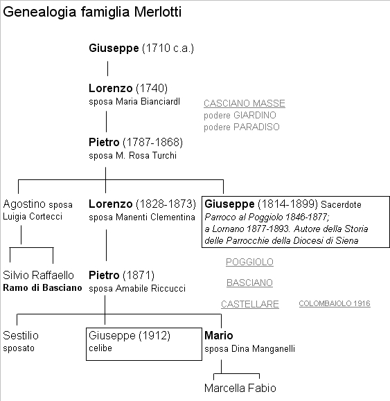

Famiglia di braccianti e minatori i Merlotti risiedono al Castellare ai primi del Novecento. Non è difficile ricostruire il loro cammino prima del 1910, data di registrazione della morte al Castellare del neonato Lorenzo figlio di Pietro e Amabile Riccucci, coniugi sposati il 29 gennaio 1910. Lei è nata in parrocchia di Quercegrossa nel 1887 da Serafino colono al podere Erede e lui al Poggiolo il 20 maggio 1871, uscito dalla famiglia del famoso parroco Giuseppe Merlotti. Nel 1846 a don Giuseppe Merlotti venne assegnata la parrocchia del Poggiolo ed entro breve tempo egli fece arrivare la sua famiglia concedendogli a mezzadria il podere della parrocchia. I Merlotti abitavano in precedenza, ossia dal 1780 circa, ai poderi Giardino e poi Paradiso di Casciano Masse e quando venne al mondo don Giuseppe erano un modesto nucleo di contadini capeggiato da Lorenzo (1740-1829) del fu Giuseppe, vedovo di Maria Bianciardi, con il figli Bernardino, coniugato ad Angelica Carli (1799-1833) e Pietro (1787), la nuora Rosa Turchi e i nipoti Giuseppe (1814), Lorenzo (1828) e Agostino (1820).

Al Poggiolo Lorenzo sposa Clementina Manenti che gli dà otto figli dei quali quattro deceduti prima dei 10 anni, tre femmine e un solo maschio sopravvissuto, chiamato Pietro, colui che tornerà al Castellare. Carlotta di Lorenzo sposerà Giovanni Fontani e morirà al Castello di Quercegrossa nel 1913. L’altro fratello di don Giuseppe, Agostino, sposò il 5 ottobre 1845, a Casciano, Luigia Cortecci dalla quale ebbe Silvio e Raffaello. Silvio prese in moglie Caterina Cellesi, ma morì presto, nel 1879, e la vedova si risposò col di lui fratello Raffaello, dal quale nacquero Eugenio e Giuseppe. Tra il 1846 e il 1877 don Giuseppe rimane al Poggiolo per trasferirsi poi parroco a Lornano fino al 1893 e muore nel 1899. Certamente anche i nipoti abbandonarono il podere della chiesa e lo fecero nel 1885 quando si trasferirono al podere Casino di Basciano dove troviamo Raffaello capofamiglia e il 15enne Pietro. Nel 1911 sono sempre al Casino, ma dopo la morte di Raffaello e la partenza di Pietro è capoccio Agostino. Comunque in quel trentennio di Lornano vissero la loro normale esistenza di coloni accompagnata dalle naturali vicende familiari legate a nascite, morti e matrimoni sino a quel terribile 1873 quando dal 17 luglio al 15 agosto la famiglia venne dimezzata dalla malattia e trovarono la morte Lorenzo del fu Pietro di anni 45, il figlio Agostino di 6 anni, la moglie Clementina di 35 anni e l’altro figlio Camillo di 10 anni. Seguendo Pietro vediamo che il suo matrimonio con Amabile venne certamente celebrato tra il 1907 e il 1909 e fu fecondo di figli. Da subito devono aver messo su casa al Castellare e di quel periodo si ricordano Giuseppe nato nel 1912 e Giuseppina (1914). Poi il trasferimento della piccola famiglia al Colombaiuolo, o Catruppolo, del Mulino di Quercegrossa nel 1916 e qui nascono Luigi nel 1917, vissuto soltanto un anno, Sestilio nel 1919, Mario e due gemelli battezzati Settimio e Ottavio nel 1923, ma vissuti poche ore. In questa piccola abitazione al Mulino di Quercegrossa con due sole stanze poste in verticale i Merlotti resteranno fino al 1962, l'anno che il Catruppolo passò al Cimarrosti dal quale venne demolito. Intanto nel 1936 troviamo che Pietro è già morto e la famiglia è composta dai fratelli Giuseppe, Mario e Sestilio, la sorella Giuseppa e la mamma Amabile. Giuseppe ha trovato occupazione fin dal 1931 come garzone dai frati dell'Osservanza e vi resterà fino al 1938. Rientrerà in famiglia, resterà celibe, e vivrà con il fratello Mario dopo che Sestilio si è sposato ed è partito per Siena. Nel 1942 Mario sposa a Tregole Dina Manganelli e nasceranno Marcella nel 1943 e Fabio, mentre Alberto nel 1948 vive solo poche ore. Con la partenza di Giuseppa che ha trovato servizio a Siena e la morte di Amabile la famiglia assumerà quella struttura di cinque persone che manterrà per molti anni fino alla partenza.
Durante la guerra e nel dopoguerra Mario, il capofamiglia, e Giuseppe lavorano alle miniere per passare all'agricola negli anni successivi. Mario dipenderà dal Bindi che lo occuperà con una certa frequenza al Castellare e Giuseppe facicchierà in qua e là. Non a caso il parroco li definisce entrambi
“garzoni” per sottolineare la loro precarietà. Con l'arrivo del Cimarrosti e la crisi generale del bracciantato i Merlotti sono costretti ad andarsene e tornare nei dintorni di Firenze. Lasciarono il Catruppolo alle ruspe che lo demolirono tra l'indifferenza generale ed oggi nessuno può dire:
“Lì ci stavano i Merlotti”.
MICHELANGIOLI (1918/21 - 1937/38 ca.); mezzadri; Arginano.
Il colono Emilio Michelangioli viveva nel secondo podere dell'Arginano. Presente nel 1921, rimase fino agli anni precedenti la Seconda guerra ed è ancora ricordato per i suoi tre uomini che acquistavano una sigaretta alla volta. La famiglia, composta nel 1931 di sei persone, aveva avuto nel 1923 la perdita dell'anziana madre Giuseppa Nucci moglie del fu Costantino e nel 1933 la morte di Ida Cresti all'età di 23 anni, moglie di Nello Michelangioli. Nel 1931 era nata Ione di Nello di Emilio, e di Ida
(Livia) Cresti. Non ci sono altri dati.
MICHELI (1951/52 - 1955/58); braccianti; Belvederino/Castello.
Un bracciante che prese casa a Belvederino dopo la partenza degli Angiolini. Guido Micheli fu Giulio nativo di Radi (1894) dove aveva anche preso in moglie nel 1921 Attilia Monaci, con due figli dagli originali nomi: Alva la femmina di circa 30 anni e Alvise il figlio 20enne, bracciante come il padre. A Belvederino rimase pochissimo, e subito dopo è registrata un loro periodo di permanenza al Castello, ma senza nessun preciso riferimento cronologico. Nel complesso la sua presenza a Quercegrossa si deve limitare a pochi anni nel Cinquanta e non hanno lasciato nessun altra traccia.
MINGHI (1962 - 1984); salariati; Mulinuzzo/Macialla/Quercegrossa.
Sono segnati da don Ottorino a Macialla dopo la partenza dei Carusi e così anche al Mulinuzzo del Castellare senz'altra indicazione. Il 9 agosto 1984 muore a Quercia Renato Minghi di anni 63 figlio del fu Sabatino e fu Maria Mori, vedovo di Rina Riversi. Si erano sposati il 28 ottobre del 1944 a Quercegrossa ed ebbero un figlio chiamato Raffaello, come un defunto zio. Presero dimora nel nostro popolo dopo l’abbandono della Cappannetta a metà anni Sessanta.
MISURINI (1928-1931); braccianti; Quercegrossa.
Solo un ricordo di un’anziana la presenza dei Misurini nel Palazzaccio verso il 1928/29:
“Nel palazzaccio ci stavano i Misurini. Lei, la vecchia moglie si affacciava alla finestra di buon mattino e diceva a voce alta: "Oh, che si farà oggi?". Senz’altro lasciarono l’appartamento ai Rossi.
Inizio pagina
Indice famiglie del '900
Indice dei Capitoli